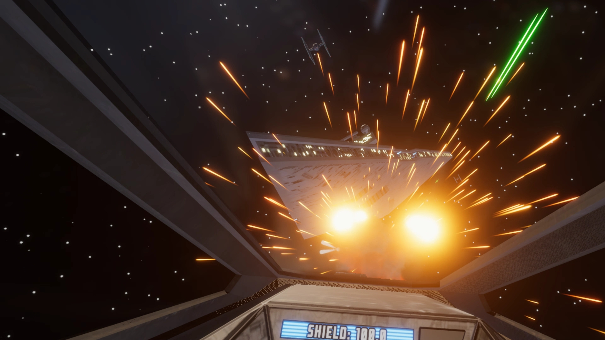

Rogue Starfighter VR
Rogue Starfighter VR (RSVR) is an immersive virtual reality Star Wars X-wing flight simulator fan-game. In it, the player experiences the full scale and power of the space combat from a galaxy far, far, away behind the controls of an immersive and fully-interactive T-65B X-wing starfighter including buttons, switches, and joysticks that you physically manipulate with your VR hands.
Responsible for: Everything except music, most sound effects, and the exterior models of each ship.